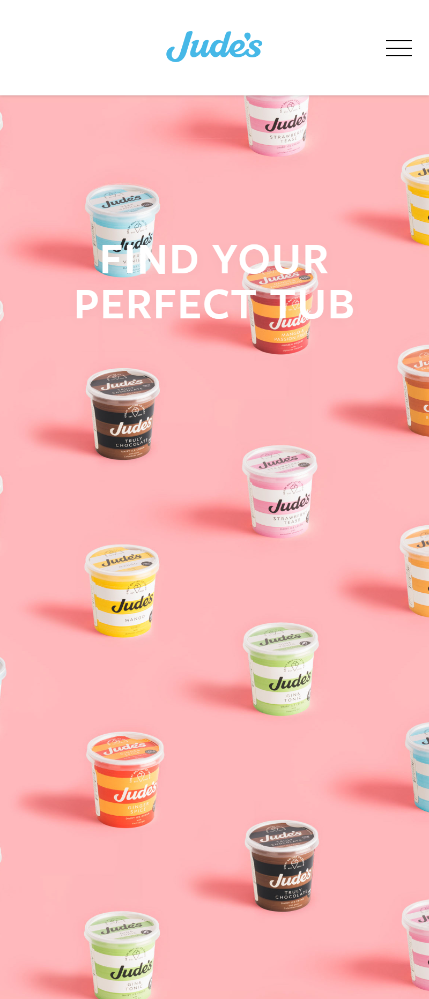
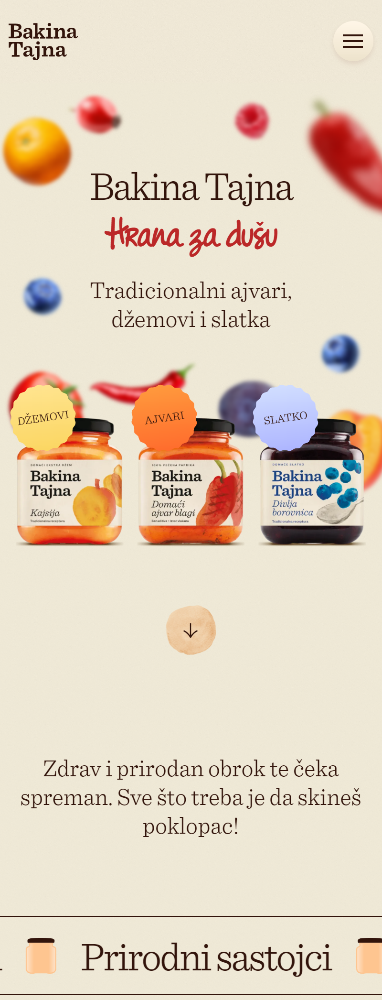
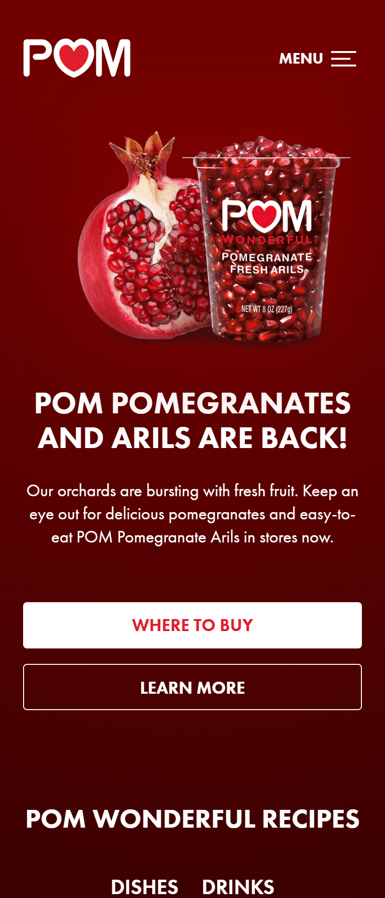

Repetition
Judes Ice Cream
judes.com Here they used repetition. By repeating the ice cream pints but just changing the color for the different flavors. This made it feel cohesive and showed the different relationships between the different types of ice cream.
Balance
Bakinatajna
bakinatajna.com The assymetrical balance at the top makes it interesting and visually pleasing. Then right after there is a symmetrical visual of products. Both of these work well together.
White Space
Pom Wonderful
pomwonderful.com/ This site not only has good contrast but appropriate white space. Nothing is too crammed together, there is padding and space between elements. The design is not too busy and has limited elements.